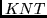

For an input of the term member from Table 2 (input argument ), the subroutine RUMT67 finds the number Nr from Table 2 (output argument NR), the shell total quasispin Q multiplied by two (output argument LQ), the shell total spin S multiplied by two (output argument LS) and the shell total angular momentum L multiplied by two (output argument L). The subroutine needs the COMMON block /MT67/ which is defined by BLOCK DATA TERMF.